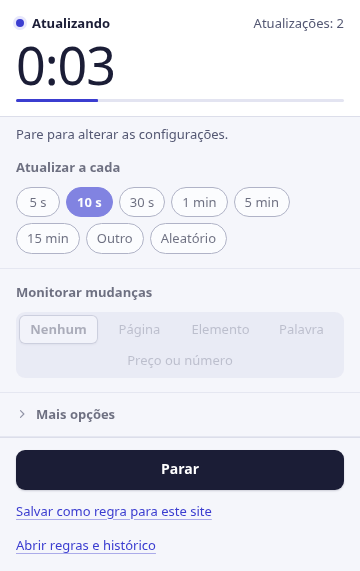
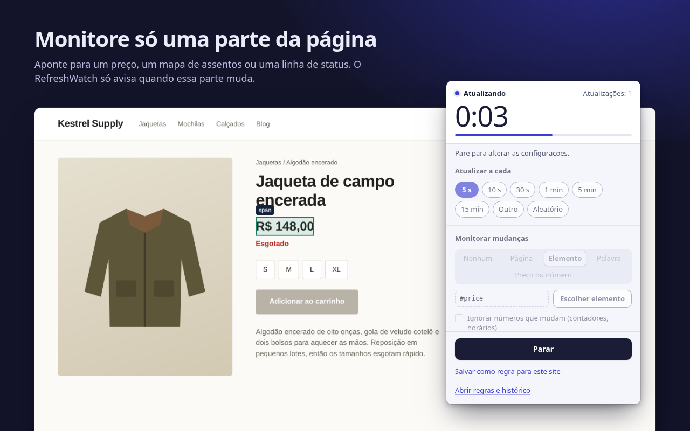
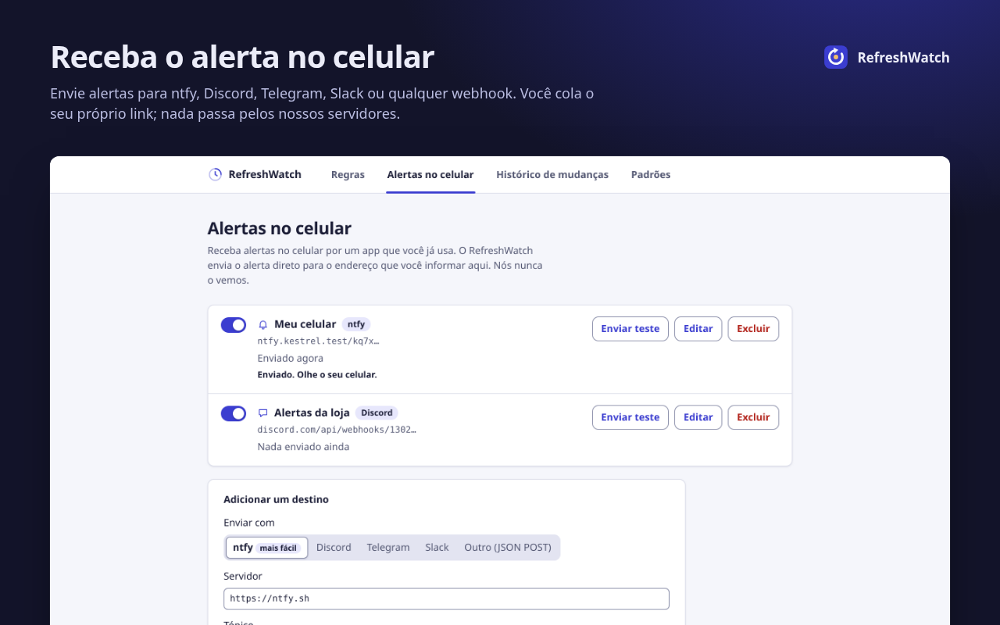
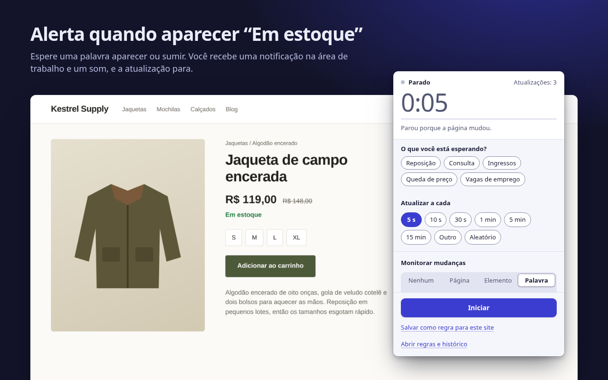

Ele atualiza. Você fica sabendo.
O RefreshWatch recarrega qualquer aba do Chrome com um timer e avisa na hora em que a página muda: um preço novo, uma palavra como “Em estoque”, um horário que acabou de vagar.
Sem conta. Sem servidores nossos. Para o Chrome 120 ou mais recente.

Diga o que ele deve monitorar
Para a atualização automática simples, basta escolher um intervalo. Adicione um monitoramento e o RefreshWatch compara a página depois de cada recarga e avisa com uma notificação e um som.
A página inteira
Qualquer mudança no texto visível. Ative “Ignorar números que mudam” para que relógios e contadores não disparem o alerta.
Um elemento
Aponte para um preço, um mapa de assentos ou uma linha de status. Só essa parte conta, e o resto da página pode mudar à vontade.
Uma palavra-chave
Alerta quando uma palavra aparece, como “Em estoque”, ou quando some, como “Nenhum horário disponível”.

Alertas no celular e quedas de preço
Adicione o seu próprio tópico do ntfy, o seu endereço do Discord, Telegram ou Slack, ou qualquer webhook, e o RefreshWatch envia o alerta direto para lá. Sem conta com a gente, e nada passa pelos nossos servidores.
Receba uma notificação no celular quando um site mudar · Alerta de queda de preço para o Chrome (em inglês)

Grátis: recursos que outras extensões cobram
Cada recurso abaixo fica atrás de um plano pago em pelo menos uma extensão popular de atualização automática ou de monitoramento de páginas. No RefreshWatch, ele simplesmente faz parte da extensão, sem plano pago, sem período de teste e sem conta. Alguns extras pagos de outras extensões, como macros, alertas por e-mail ou SMS e verificações na nuvem, o RefreshWatch nem oferece.
| Recurso | O que você ganha | RefreshWatch |
|---|---|---|
| Monitorar uma parte da página | Escolha qualquer elemento; alerta só quando ele muda | Grátis |
| Alertas de palavra-chave | Uma palavra ou frase aparece, ou some | Grátis |
| Clicar em um botão após recarregar | Escolha o botão e quanto tempo esperar | Grátis |
| Intervalo aleatório | Qualquer valor entre dois números, de 1 segundo a 24 horas | Grátis |
| Configurações salvas por página | Regras por URL exata, começo do endereço ou curinga, que começam sozinhas | Grátis |
| Sem limite de monitores | Quantas abas e regras você quiser | Grátis |
| Histórico de mudanças | As últimas 50 mudanças, com o texto de antes e de depois | Grátis |
Comparação com os planos pagos listados na Chrome Web Store e nas páginas de preços dos desenvolvedores, conferidos em 9 de outubro de 2026. A comparação com uma extensão bem conhecida está na página da alternativa (em inglês).
Nada passa pela gente
O RefreshWatch lê e compara as páginas no seu computador. Ele não tem servidor próprio. A única coisa que ele envia é um alerta, para um destino no celular que você mesmo configurou.
- Sem contaInstale e comece. Não há cadastro nenhum.
- Sem análises, anúncios ou rastreamentoNenhuma requisição de rede, a não ser os alertas no celular que você configurar.
- Acesso a um site de cada vezA atualização automática simples não precisa de acesso a sites. Quando você ativa o monitoramento em um site, o Chrome pergunta só sobre esse site.
- Guardado no seu computadorRegras, configurações e o histórico de mudanças ficam no Chrome deste computador e somem quando você remove a extensão.
Três passos da aba aberta até o alerta
Escolha um intervalo
Clique no ícone do RefreshWatch na aba. Escolha de 5 s a 15 min, um tempo personalizado ou um intervalo aleatório.
Escolha o que monitorar
A página inteira, um elemento que você apontar ou uma palavra-chave. Ou nada, para a atualização automática simples.
Receba o alerta
Quando a mudança chega, você recebe uma notificação e um som, e a atualização para. Salve como regra para ela começar sozinha da próxima vez.

Chega de ficar recarregando
Grátis na Chrome Web Store, em inglês, árabe, alemão, espanhol, francês, japonês, português do Brasil, chinês simplificado e russo.